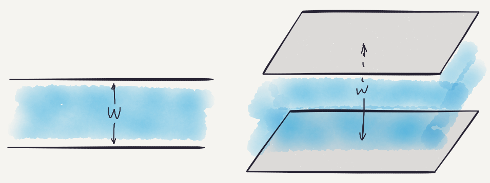
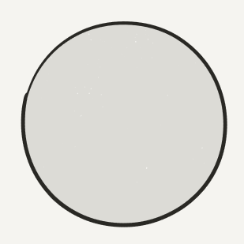
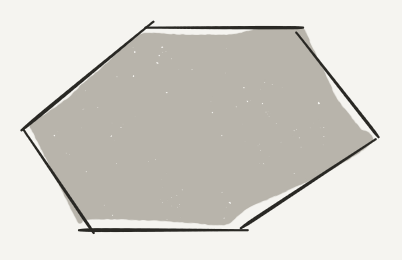
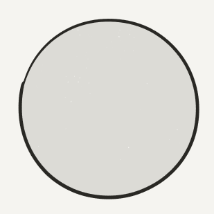
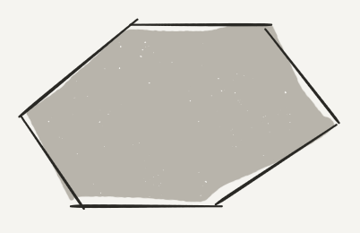
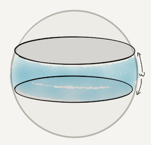
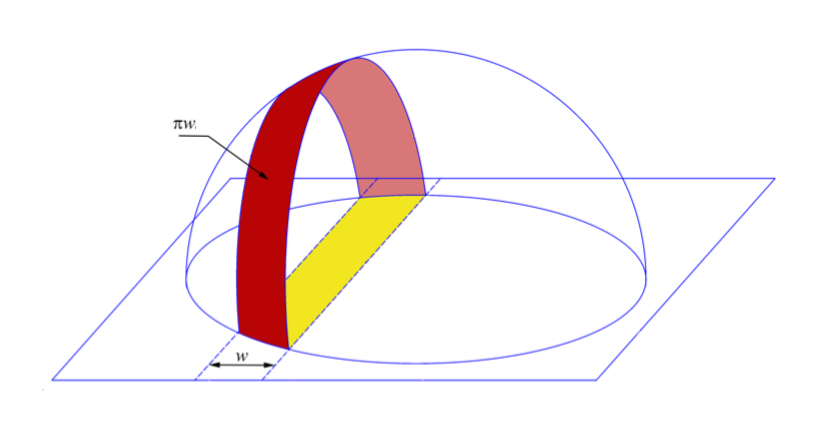
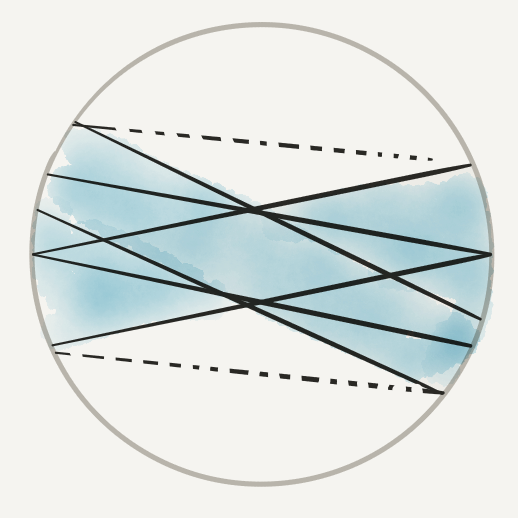
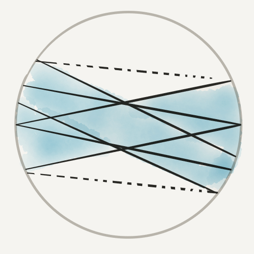
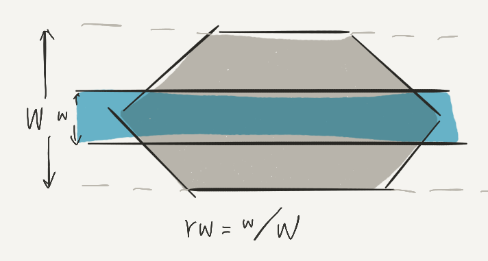

Plank
A plank (or slab, strip) of width $w$ is part of $\mathbb{R}^d$ that lies between two parallel hyperplanes at distance $w$.
Tarski's plank problem
 
The width of $C$ is the smallest width of plank covers $C$.
If convex body $C$ is covered by planks, then ...
total width of planks is at least width of $C$.
Alfred Tarski in 1932 proved for disks
Thøger Bang in 1950 proved for convex bodies
Zone
Zone of width $\omega$ is part of unit sphere that lies within spherical distance $\omega/2$ of a given great circle.
Fejes Tóth's zone conjecture
The total width of zones covering sphere is at least ... $\pi$
Research Problems: Exploring a Planet.
American Mathematical Monthly, 1973.
Appeared in Research Problems in Discrete Geometry
1972 Rosta: 3 zones of equal width;
1974 Linhart: 4 zones of equal width;
2016 Fodor, Vígh and Zarnócz:
if $100$ zones of equal width $w$ cover sphere,
then $100w \ge 2.032$;


2017 J.–Polyanskii: any set of zones, any dimension, charaterize the equality cases.
Plan of talk
Proofs of Tarski's plank problem
Proof of Fejes Tóth's zone conjecture
Tarski's proof
Total width of planks covering unit disk is $\ge 2$.
Planks cover disk$\implies$ Arches cover hemisphere$\implies \sum \pi w_i \ge 2\pi$
Tarski's proof applies to
$2 \times$ inradius of $C$ = width of $C$,
but not to

Bang's proof
$\vec{w}_i :=$ "direction" of plank $i$
$L := \{\pm \vec{w}_1 \pm \dots \pm \vec{w}_n\}$
Idea 1: $L$ cannot be covered by the planks.
Idea 2: $L$ can be embeded in $C$ of large width.
Bognár's simplification
Special case: all planks are centered at O.
Claim: $\vec{w}\in L$ achieving max norm is not covered.
$|\vec{w}| \ge |\vec{w} \pm 2\vec{w}_i| \implies w$ not covered by plank $i$.
General case
$\vec{w} = \pm \vec{w}_1 \pm \dots \pm \vec{w}_n \in L$ achieves max norm
$\Leftrightarrow |\epsilon_1 \vec{w}_1 + \dots + \epsilon_n \vec{w}_n|^2$ is maximized on $\{\pm 1\}^n$.
In general, plank $i$: $|\vec{w} \cdot \vec{w}_i$$+ b_i$$| \le |\vec{w}_i|^2$
Optimize quadratic function:
$\sum \epsilon_i\epsilon_j (\vec{w}_i\cdot\vec{w}_j)$ $+\sum b_i\epsilon_i$
Plan of Talk
Proofs of Tarski's plank problem
Proof of Fejes Tóth's zone conjecture
Fejes Tóth's zone conjecture

$\vec{w}_i :=$ direction of zone $i$.
Bang says: some $\vec{w} = $$\epsilon_1$$\vec{w}_1 + \dots +$$\epsilon_n$$\vec{w}_n$ is not covered.
To Bang or to ...?
 
If $|\vec{w}| \le 1$, then $\hat{w}$ is not covered.
Otherwise, $\vec{w} = \vec{w}_1 + \dots + \vec{w}_n$ is of big maginitude ...
Maybe we can merge some zones!
When to merge?

$\angle(\vec{w}_1, \vec{w}_2) \le \alpha_1 + \alpha_2$
Trignometry
$\angle(\vec{w}_1, \vec{w}_2) \le \alpha_1 + \alpha_2$
$\cos \angle(\vec{w}_1, \vec{w}_2) \ge \cos(\alpha_1 + \alpha_2)$
$|\vec{w}_1 + \vec{w}_2|^2 = |\vec{w}_1|^2 + 2|\vec{w}_1||\vec{w}_2|\cos\angle(\vec{w}_1, \vec{w}_2) + |\vec{w}_2|^2$
$\ge \sin^2\alpha_1 + 2\sin\alpha_1\sin\alpha_2\cos(\alpha_1 + \alpha_2) + \sin^2\alpha_2$
$= \dots = \sin(\alpha_1 + \alpha_2)^2$.
Can merge 2 zones when $|\vec{w}_1 + \vec{w}_2| \ge \sin(\alpha_1 + \alpha_2)$.
In general, maybe we can merge some zones when $|\vec{w}_1 + \dots + \vec{w}_n| \ge \sin(\alpha_1 + \dots + \alpha_n)$.
Punchline
Assume half of total width $\alpha_1 + \dots + \alpha_n < \pi / 2$.
If $|\vec{w}| \leq 1 $, $\hat{w}$ is not covered.
Otherwise $|\vec{w}| > 1 > \sin(\alpha_1 + \dots + \alpha_n)$, merge!
Goodman–Goodman Theorem
Let disks with radii $r_1, \dots, r_n$ lie in plane.
If no line "seperates" disks,
then they can be coverered by disk of radius $\sum_i r_i$.
Idea: Let $\vec{x}_i$ be center of disk $i$. Consider the disk centered at $\sum_i r_i\vec{x}_i / \sum_i r_i$ with radius $\sum_i r_i$.
Inspiration: Use zone with direction $\vec{w}$ to replace.
Corollaries and Open Problems
Projective duality


Great circle $\leftrightarrow$ Antipodal points
Zone $\leftrightarrow$ Antipodal caps
If every great circle intersects (antipodal) caps...
then total radius of caps is at least $\pi/2$.
Covering a cap
The total width of zones covering cap of radius $r$ is ...$\ge 2r$

Conjecture (Fejes Tóth): ... covering spherical convex domain $D$ is at least width of $D$.
Bang's plank conjecture
Measure relative to $C$ in direction normal to plank.
Conjecture: total relative width of planks covering $C$ is at least $1$.
Keith Ball in 1991 proved for symmetric bodies.
Bezdek's annulus problem
Conjecture: total width of planks covering punctured disk is at least diameter.
Massachusetts Institute of Technology
zilinj@mit.edu